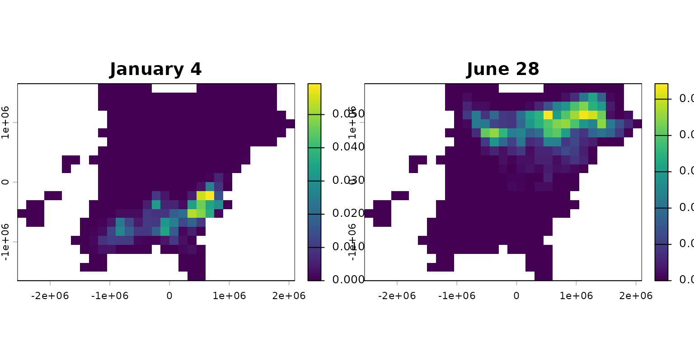
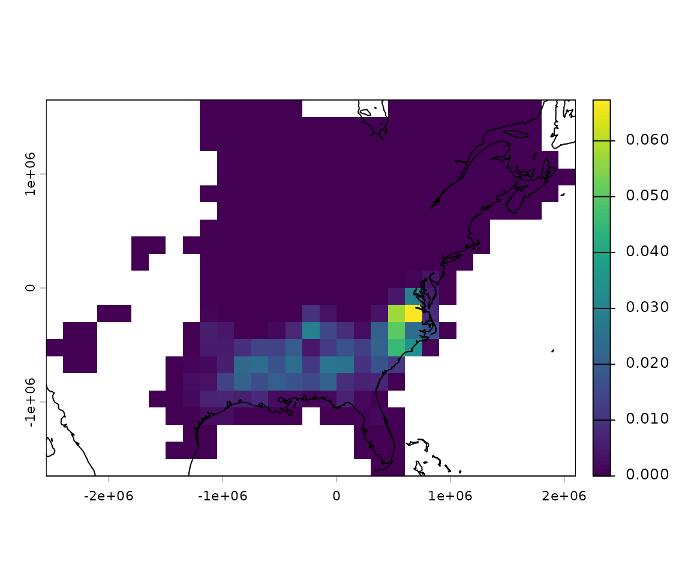
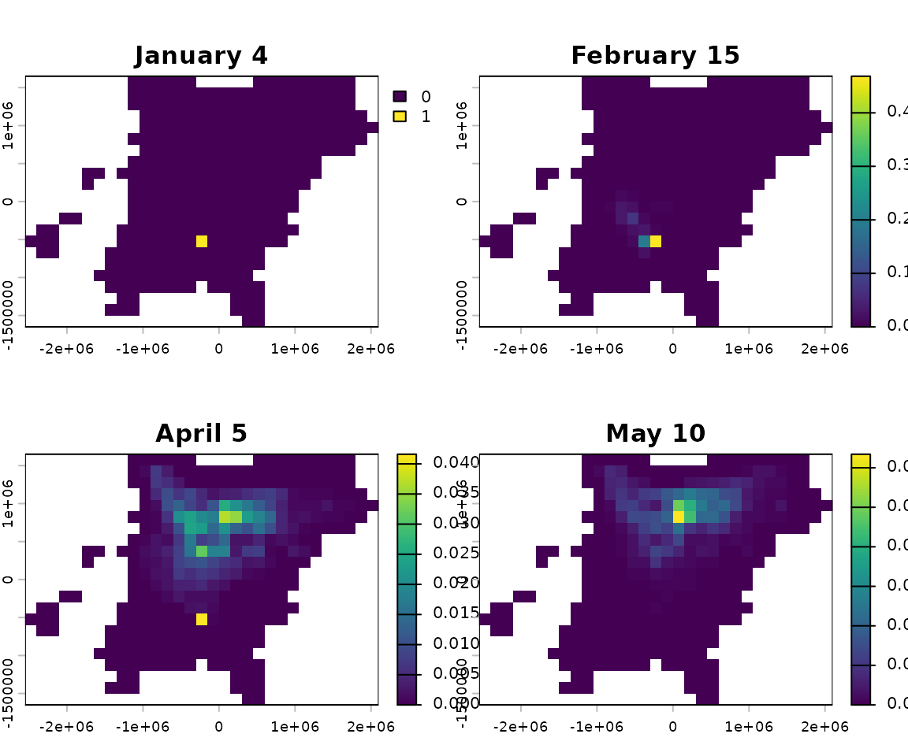

Setup
Install packages
installed <- rownames(installed.packages())
if (!"remotes" %in% installed)
install.packages("remotes")
if (!"rnaturalearthdata" %in% installed)
install.packages("rnaturalearthdata")
remotes::install_github("birdflow-science/BirdFlowModels")
remotes::install_github("birdflow-science/BirdFlowR", build_vignettes = TRUE)Load model
The BirdFlow Science team has shared a collection of fitted models for use with the BirdFlowR package. The website includes reports on each species.
We can also access the collection index through the package.
# Load and print index
index <- load_collection_index()
#> Downloading collection index
print(index[, c("model", "common_name")])
#> model common_name
#> 1 amewoo_prebreeding American Woodcock
#> 3 buwtea_prebreeding Blue-winged Teal
#> 4 lobcur_prebreeding Long-billed Curlew
#> 5 swahaw_prebreeding Swainson's HawkAnd we can load a model from the collection based on the
model column from the index.
Note: in the vignette this block isn’t executed.
# Load a specific model
bf <- load_model("amewoo_prebreeding") # caches locally and loads from cacheThis loads the smaller example model instead for efficiency of package building and testing, but do not use this one for science!
bf <- BirdFlowModels::amewoo # example and test datasetAccess basic information
dim(), nrow(), and ncol() all
report on raster dimensions associated with the model.
n_active is the total number of cells that the BirdFlow
model can route birds through and is a subset of the cells in the
raster.n_transitions() and n_distr() report on
temporal dimensions. If the model is_cyclical(), they will
be equal.
# Methods for base R functions:
dim(bf)
#> [1] 22 31
c(nrow(bf), ncol(bf))
#> [1] 22 31
bf # same as print(bf)
#> American Woodcock BirdFlow model
#> dimensions : 22, 31, 52 (nrow, ncol, ntimesteps)
#> resolution : 150000, 150000 (x, y)
#> active cells : 342
#> size : 12.5 Mb
# BirdFlowR functions
n_active(bf)
#> [1] 342
n_transitions(bf)
#> [1] 52
n_timesteps(bf)
#> [1] 52
# Contents
has_marginals(bf)
#> [1] TRUE
has_distr(bf)
#> [1] TRUE
has_transitions(bf)
#> [1] FALSE
is_cyclical(bf)
#> [1] TRUESpecies information and metadata
species_info() and get_metadata() take a
BirdFlow object as their first argument. An optional second argument
allows specifying a specific item, if omitted a list is returned with
all the available information.
species(bf) is a shortcut for
species_info(bf, "common_name")
Use ?species_info() to see descriptions of all the
available information. Dates associated with migration and resident
seasons are likely to be useful.
species(bf)
#> [1] "American Woodcock"
species(bf, "scientific")
#> [1] "Scolopax minor"
species_info(bf, "prebreeding_migration_start")
#> [1] "2021-01-18"
si <- species_info(bf) # list with all species information
md <- get_metadata(bf) # list with all metadata
get_metadata(bf, "birdflow_model_date") # date model was exported from python
#> [1] "2023-11-21 17:19:27.009766"
validate_BirdFlow(bf) # throws error if there are problemsSpatial aspects
BirdFlow models are based on a raster representation of a time series of species distributions and contain all the spatial information necessary to recreate those distributions and to define how the raster is positioned in space. BirdFlowR uses the terra package to import raster data and provides BirdFlow methods for functions defined in the terra package - so that you can use those functions on BirdFlow objects.
crs() returns the coordinate reference system - useful
if you need to project other data to match the BirdFlow object.
res(), xres(), and yres()
describe the dimensions of individual cells in the model.
ext() returns a terra extent object.compare_geom() tests if the extent, resolution, and CRS of
two objects is the same. BirdFlowR includes methods to compare BirdFlow
models with each other and with terra objects.
# Methods for terra functions:
a <- crs(bf) # well known text (long)
crs(bf, proj = TRUE) # proj4 string
#> [1] "+proj=laea +lat_0=39.161 +lon_0=-85.094 +x_0=0 +y_0=0 +datum=WGS84 +units=m +no_defs"
res(bf)
#> [1] 150000 150000
c(xres(bf), yres(bf)) # same as res(bf)
#> [1] 150000 150000
ext(bf)
#> SpatExtent : -2550000, 2100000, -1650000, 1650000 (xmin, xmax, ymin, ymax)
c(xmin(bf), xmax(bf), ymin(bf), ymax(bf)) # same as ext(bf)
#> [1] -2550000 2100000 -1650000 1650000
# Compare geometries - do they have the same CRS, extent, and cell size
compareGeom(bf, rast(bf))
#> [1] TRUEBirdFlow objects also play nicely with the sf package.
Retrieve and plot distributions
A distribution in BirdFlow is stored as a vector of values that
correspond to only the active cells (n_active()) in the
model. Multiple distributions are stored as matrices with
n_active() rows and a column for each distribution.
We can retrieve distributions in this format with
get_distr(). Use timestep, character dates, date objects,
or “all” to specify which distributions to retrieve.
Retrieve the first distribution and compare its length to the number of active cells.
d <- get_distr(bf, 1) # get first timestep distribution
length(d) # 1 distribution so d is a vector
#> [1] 342
n_active(bf) # its length is the the number of active cells in the model
#> [1] 342Get 5 distributions, the result is a matrix in which each column is a distribution with a row for each active cell.
d <- get_distr(bf, 26:30)
dim(d)
#> [1] 342 5
head(d, 3)
#> time
#> i June 28 July 6 July 13 July 20 July 27
#> [1,] 0 0.000000e+00 0.000000e+00 0 0.000000e+00
#> [2,] 0 9.342922e-06 8.769396e-05 0 1.607396e-06
#> [3,] 0 1.499294e-05 4.842432e-05 0 1.748452e-06We can also specify distributions with dates, or use “all” to retrieve all the distributions.
d <- get_distr(bf, "2022-12-15") # from character date
d <- get_distr(bf, "all") # all distributions
d <- get_distr(bf, Sys.Date()) # Using a Date objectUse rasterize_distr() to convert a distribution to a
SpatRaster defined in the terra package. The second argument, the
BirdFlow model, is needed for the spatial information it contains.
d <- get_distr(bf, c(1, 26)) # winter and summer
r <- rasterize_distr(d, bf) # convert to SpatRasterAlternatively convert directly from BirdFlow to SpatRaster with
rast(). The second (optional) argument which
accepts the same inputs as which in
get_distr().

BirdFlowR provides convenience wrappers to functions in rnaturalearth that load vector data and then crop and transform it to make it suitable for plotting with BirdFlow output.
Note: until rnaturalearth has fully transitioned away from legacy packages you may see a warning about them, but BirdFlowR does not use the legacy packages or data formats itself.
r <- rast(bf, species_info(bf, "prebreeding_migration_start"))
plot(r)
coast <- get_coastline(bf) # lines
plot(coast, add = TRUE)
Forecasting
In this section we will sample a single starting location from the winter distribution and project it forward. We will generate a distribution of predicted breeding grounds for birds that wintered at the starting location.
Set predict parameters.
start <- 1 # winter
end <- 26 # summerSample starting distribution
sample_distr() will sample from one or more input
distribution to select a single location per distribution. The result is
one or more distributions with ones in the selected location(s) and zero
elsewhere.
set.seed(0)
d <- get_distr(bf, start)
location <- sample_distr(d)
print(i_to_xy(which(as.logical(location)), bf)) # starting coordinates
#> x y
#> 1 -225000 -525000Project forward from this location to summer
predict() returns the distribution over time as a matrix
with one column per timestep.
The plot shows where birds that winter at a particular location are likely to be as the year progresses and ultimately where they might spend their summer. The probability density spreads as the weeks progress.
f <- predict(bf, distr = location, start = start, end = end,
direction = "forward")
r <- rasterize_distr(f[, c(1, 7, 14, 19)], bf)
plot(r)
Additionally, we can calculate the difference between the projected distribution and the distribution of the species as a whole at the same timestep.
projected <- f[, ncol(f)] # last projected distribution
diff <- projected - get_distr(bf, end)
plot(rasterize_distr(diff, bf))
Generate synthetic routes
Here we sample locations from the American Woodcock winter distribution and generate routes to their summer grounds.
Set route parameters.
n_positions <- 15 # number of starting positions
start <- 1 # starting timestep (winter)
end <- 26 # ending timestep (summer)Generate starting locations
First extract the winter distribution, then use
sample_locations() with n = n_positions to
sample the input distribution repeatedly. The result is a matrix in
which each column has a single ‘1’ representing the sampled
location.
d <- get_distr(bf, start)
locations <- sample_distr(d, n = n_positions, bf = bf, format = "xy")
x <- locations$x
y <- locations$yPlot the starting (winter) distribution and sampled locations.
winter <- rasterize_distr(d, bf)
plot(winter)
points(x, y)
Generate routes
route() will generate synthetic routes for each starting
position. route() returns a BirdFlowRoutes
object which has a $data element with a row for each
timestep of each route, but also includes some additional spatial,
temporal, and species information from the BirdFlow
object.
rts <- route(bf, x_coord = x, y_coord = y, start = start, end = end)
head(rts$data, 4)
#> route_id x y i lon lat timestep date route_type
#> 1 1 675000 -525000 271 -77.7671 34.19035 1 2021-01-04 synthetic
#> 2 1 675000 -525000 271 -77.7671 34.19035 2 2021-01-11 synthetic
#> 3 1 675000 -525000 271 -77.7671 34.19035 3 2021-01-18 synthetic
#> 4 1 675000 -525000 271 -77.7671 34.19035 4 2021-01-25 synthetic
#> stay_id stay_len
#> 1 1 3
#> 2 1 3
#> 3 1 3
#> 4 1 3The route() function can sample starting locations from
the distribution for the starting timestep so the following is
equivalent to the preceding two sections.
rts2 <- route(bf, n = n_positions, start = start, end = end)We can specify the date range with any arguments supported by
lookup_timestep_sequence() so an alternative to the above
with slightly different start and end dates is to use the season
argument. Here we route during the prebreeding migration.
rts3 <- route(bf, n = n_positions, season = "prebreeding")Using base R plotting to plot routes
Plot the route lines over the summer distribution along with points at the starting and ending positions.
d <- get_distr(bf, end)
summer <- rasterize_distr(d, bf)
line_col <- rgb(0, 0, 0, .2)
pt_col <- rgb(0, 0, 0, .5)
plot(summer)
points(x, y, cex = .4, col = pt_col, pch = 16) # starting points
rts_sf <- sf::st_as_sf(rts$data, coords = c("x", "y"), crs = rts$geom$crs)
lines_sf <- rts_sf |>
dplyr::group_by(route_id) |>
dplyr::summarize(geometry = st_combine(geometry)) |>
sf::st_cast("LINESTRING")
plot(lines_sf, add = TRUE, col = line_col) # routes
end_pts <- rts$data[rts$data$timestep == end, ] # end points
points(x = end_pts$x, y = end_pts$y,
cex = 0.4, pch = 12, col = pt_col)
title(main = species(bf))